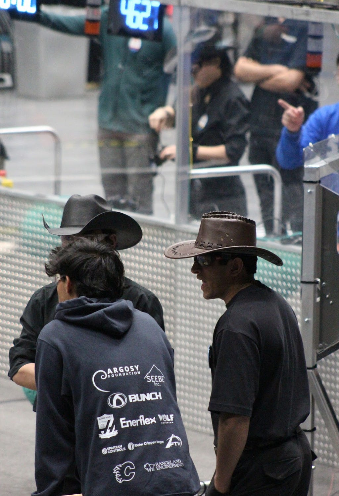
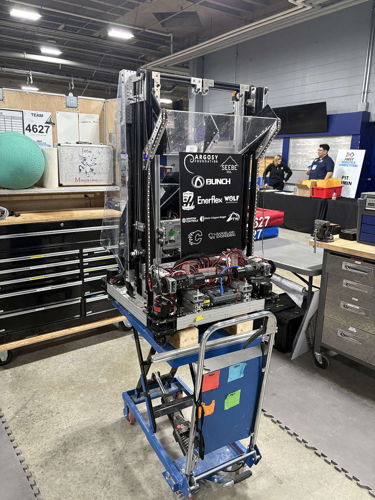
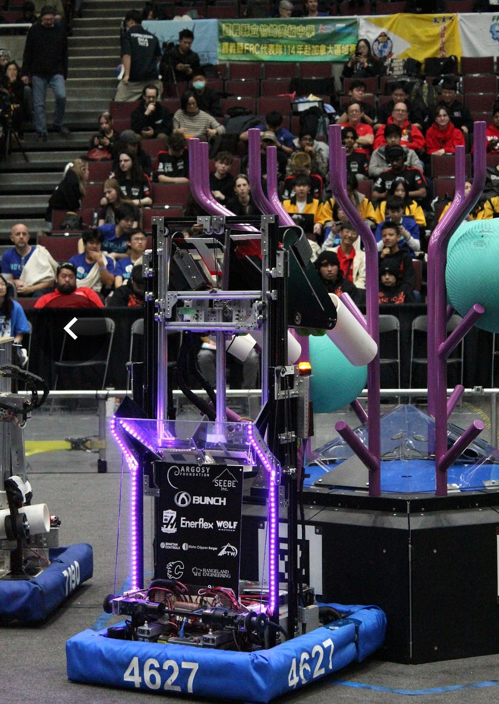

Mar 2025
Reflection: FRC
I’ve participated in the First Robotics Competition (FRC) for 3 seasons, this season I’d say I put around 400 hours, more or less, into building the robot. And yet, the season's result was going 0–2 in the playoffs and a cumulative record of 5–7. It was a bad loss, to say the least.



In the previous season (2024), our robot was honestly not good and our season ended with a record of 5–9. We had changed a lot of things, a new type of drivetrain, a new approach to auto, and a new ambition of going to worlds. Nothing came to fruition. This season was a redemption arc for a lot of us, we wanted to take everything that went wrong last year and make the correct fixes to ensure we will never see the same result again. And before going into this year's competition, that is what I thought we had done successfully.
How could we have fixed so much, and made a consistent robot that would score 40 points on average only to arrive at the same result? Our robot had no breaks at comp, something I hadn't seen in the past two years of our team. Yet this feat did not translate into a higher placement at the competition. At first, it was very upsetting, but there is a lot that can be learnt here. Here are a couple of my thoughts:
- Auto: Our auto was inconsistent, and did not use our robot to its fullest capacity. I believe, we should have focused on L4 scoring in auto, even if it was just one of two pieces. It would have been a key factor in being noticed by elite teams. I understand that our robot was far more consistent at scoring at L3, but perfecting L4 would have been worth our time. At the very least, we should have gone for a second piece of coral instead of scoring the ball. It is important to understand the advantageous parts of the auto period, scoring the ball wouldn't give us any extra points compared to Teleop, but Coral would.
- Focus on ranking points: There were too many ranking points that went unnoticed whilst we were playing matches. I believe a higher emphasis on ranking points over actual points would have been key in allowing us to rank higher. It's very obvious that elite teams almost exclusively focus on ranking points.
- Endgame(Rooted in Member Retention): Endgame is an insanely important part of the game and unfortunately due to low membership we were not able to focus on this aspect. I know for a fact if the same amount of members were to have spread themselves thin enough to build an endgame component, our robot would have performed far worse. It's important to not take everything on at the same time(something we tried to do last season and did not end well). This issue lies in our member retention. We always start off with a lot of kids, but eventually it dissipates into 10–15 members. I do think this is something we are beginning to fix though, with the establishment of a Jr team, so the future of our team shouldn't see this problem.
Though I do dislike telling myself we lost because of things outside of our control, they are still important to acknowledge. The biggest factor is our alliance partners. A couple of times, we were fortunate enough to get with elite teams, for about 2 or 3 of the matches we played. The rest, seemed almost as if everything were against us. There were a couple of matches where our alliance partners wouldn't move at all, essentially forcing us to play a 2v3 or 1v3. Many of our alliance partners were not able to score, causing us to be the only major scoring team in our alliance, and we simply couldn't keep up.
Another important topic that I want to mention is that we are a student-run team. Emphasis on student. How well we do in a season is based on how many students show up and put in the work. Many other elite teams are mentor-run, and it is unmistakably obvious. This fact comes down to one thing, member retention. I touched on this but it must be restated as it is the core of our team. Mentors can take shared experiences from previous seasons and teach them to new members, but if there are not many people present to build the robot, there is no point.
Though there were things out of our control, there is a lot in our control that we can change. I do believe if we can brush up on the points I made previously, we are making serious progress into the territory of an elite team.
On a final note, the past three years have been incredible in my own personal development as an engineer and also as a human being, and all the thanks go to the mentors, teachers, and team members. Thank you. I am incredibly grateful, and can’t imagine who I would be without this program and the support.